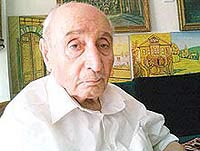

Ziya Nur Aksun

Ziya Nur, 29 Mayýs 1930 tarihinde Konya’da doðdu. Ýlk ve orta öðrenimini doðduðu þehirde yaptý. Orta öðreniminden sonra kaydýný yaptýrdýðý Ankara Hukuk Fakültesi’nden 1955 yýlýnda mezun oldu. Hukuk fakültesi mezunu olmakla birlikte mesaisini daha çok Osmanlý ve Ýslâm tarihini öðrenmeye ayýrdý. Bu alanda önemli bir birikime sahip oldu. Günlük siyasi olaylarý irdeler ve eleþtirirken söz konusu birikimini kullandý. Yazýlarýný tarihi muhakeme içinde ortaya koydu.Osmanlý ve Ýslâm tarihi hakkýndaki bilgileriyle bir cazibe merkezi oluþturan Ziya Nur’un etrafýnda her zümreden insanlar toplanmaya baþladý ve sohbetlerinden istifade etmeye çalýþtý. Memleketin meseleleriyle ilgili Dündar Taþer ve Erol Güngör ile yaptýðý sohbetler kendisi tarafýndan kitaplaþtýrýldý. Bu eser Dündar Taþer’in vefatýndan sonra yayýnlandý. Eserini Z. N. rumuzu ve Dündar Taþer’in Büyük Türkiyesi adý altýnda yayýmladý. 1974 yýlýnda neþredilen eserin altý baskýsý yapýldý.
Ziya Nur’un hukuk fakültesindeki öðrenciliði sýrasýnda Bediüzzaman ve eserleri hakkýnda bilgi sahibi olduðu ve yakýndan takip ettiði bilinmektedir. Hatta, Konya’da lise öðrenciliði sýrasýnda Risâle-i Nur’u tanýdýðý ve istifade ettiði nakledilmektedir. Eserlerin neþri konusunda da, öðrenciliði sýrasýnda önemli bir gayretin içine girdiði ve çalýþtýðý görülmüþtür. “Bediüzzaman Kimdir?” sorusunu cevaplayýp “Hukuk Fakültesinden Ziya Nur” imzasýyla yazdýðý ve Risâle-i Nur’a dahil edilen bir yazýsýndan bu neticeyi çýkarmak da mümkündür. Risâle-i Nur’da ismi, bu yazýsý vesilesiyle zikredilmiþtir. Bediüzzaman ve yaptýðý iman hizmeti hakkýnda Ziya Nur þu ifadeleri kullanmýþtýr:
“Bediüzzaman, mâhut ve mühlik uçurumlarla dolu olan içtimaî seyrimizi, mânevî deðerler bakýmýndan bir nûr-ý imânî ve ziyâ-yý irþâdî ile taht-ý emniyete almaya çabalayan ve bu hususta bilmenin, kendi kendini idare etmek; bilmemenin, körü körüne idare olunmak hakikatine vücut vereceðini halk kitleleri arasýnda temessül ettiren insandýr.
Bediüzzaman, ahlâkî kýymetler ve millî hasletlerin pozitif ilimlerle muvazi olarak kat-ý mesafe edemediðini, bu mânâ ve þekil muvacehesinde yetiþen çöl kadar kuru ve boþ ruhlarla bulanmýþ gençliðin, istikbalde milletimizin rüyet ufkunda bir kara belâ olacaðý hakikat-i kat’iyesini gözlere sokan ve çare-i halâsý da gösteren kimsedir.
Bediüzzaman, þark ve garp arasýndaki azîm mufarakatýn, þahsiyet mefhumunun daralma ve geniþlemesinden neþ’et ettiðini gören ve asrýn maymun taklitçiliðine varan þahsiyetsizliði önünde þahsiyet mefhumunun ilâhî yüksekliðini gönüllerin mihrak noktasýnda sembolleþtirmeye tevessül eden âlimdir.
Bediüzzaman, hür adamlarýn, hür memleketinin ilâhî kuruluþ felsefesini, akýllara ve gönüllere nakþeden din adamýdýr. Bu necip millet, Bediüzzaman gibi nefsindeki menfaat putunu deviren insanlarýn hizmetine çok, ama çok muhtaçtýr.” (Tarihçe-i Hayat, 1994, s. 552)
Ziya Nur, Filibeli Þehbenderzade Ahmet Hilmi’nin “Ýslâm Tarihi” adlý eserini sadeleþtirerek neþretti. Esere notlar yazdý ve eserin müellifi hakkýnda ilâveler yaptý. Yaptýðý ilâveler eserin asýl hacminden daha fazla oldu. Söz konusu ilâveleri yaparken usul bakýmýndan farklý bir metot takip etti. Türklerin Ýslâm Tarihindeki yerlerine daha fazla yer verdi. Eserde, Sünni ve Þiî tarikatlarýyla ilgili akla gelebilecek bazý sorularýn da cevabýný vermeye çalýþtý. Dinî ve siyasî cereyanlarý farklý bir deðerlendirmeye tabi tuttu. Bu eser ilk defa 1974 yýlýnda neþredildi. Eser, 1982 yýlýnda bir kez daha yayýmlandý.
Neþredilen bu iki eser dýþýnda bazý makaleler de neþreden Ziya Nur, yazýlarýný daha çok Diriliþ adlý dergide yayýmlatmýþtýr. Makalelerini yazarken de Z. N. rumuzunu kullanmýþtýr.
Ziya Nur’un büyük emek verdiði ancak, tamamlayamadýðý en önemli çalýþmasý Osmanlý Tarihi hakkýndadýr. Eserini vücuda getirmek için çok sayýda kaynak ve vesika taramýþ ve önemli bilgiler toplamýþtýr. Eserini, Birinci Dünya Savaþý yýllarýna kadar gelen tarihî geliþimi yazmak üzere tasarlamýþtýr. Bu eseri tamamlamak için 1965 yýlýnda çalýþmaya baþlamýþ ve on bir yýl devam etmiþtir. Ancak, eserini tamamlayamamýþtýr. Eserinin basýlmasýný bekleyen dostlarýna; eserinin bu haliyle neþredilmesini istemediðini, en önemli sebep olarak da, yazmaya baþladýðý günlerdekine göre tarihî görüþlerinde önemli deðiþiklikler olduðunu, dolayýsýyla yazdýklarýný bir daha gözden geçirmesi gerektiðini ifade etmiþtir.
Osmanlý Tarihi üzerindeki çalýþma ve ilgili eseri baskýya vermemesine sebep olarak, geniþ bir önsöz yazma arzusu da yatmaktadýr. Çünkü, Ziya Nur Osmanlý Tarihi adýný taþýyacak eserine 150-200 sayfalýk geniþ bir önsöz yazmak isteyip bunun hazýrlýklarýný da yapmýþtýr. Bütün bu arzularýný gerçekleþtiremeden 1976 yýlýnda bir felç geçirmiþtir. Yazar ve düþünür bunun neticesinde hem yazma, hem de konuþma melekesini önemli ölçüde kaybetmiþtir. Bu rahatsýzlýðýndan kurtarýlmasý için yapýlan tedaviler de netice vermemiþtir.
Ziya Nur, tarihe olan merakýnýn yanýnda iyi bir san’atsever olduðu da bilinmektedir. Özellikle resim san’atýna özel bir ilgi duymuþ ve bu alandaki kabiliyetini yaptýðý eserlerle ortaya koymuþtur. Yaðlý boya tablolarý bir sergi açmak için yeterli miktara ulaþmýþtýr. Yazma ve konuþma melekesini kaybetmesine raðmen hayata küsmemesi takdire þayan bir durum olmuþtur. Bütün bunlarýn dýþýnda þiir ve musikiye de hayranlýk duyan bir kiþiliðe sahip olmakla tanýnmýþtýr.